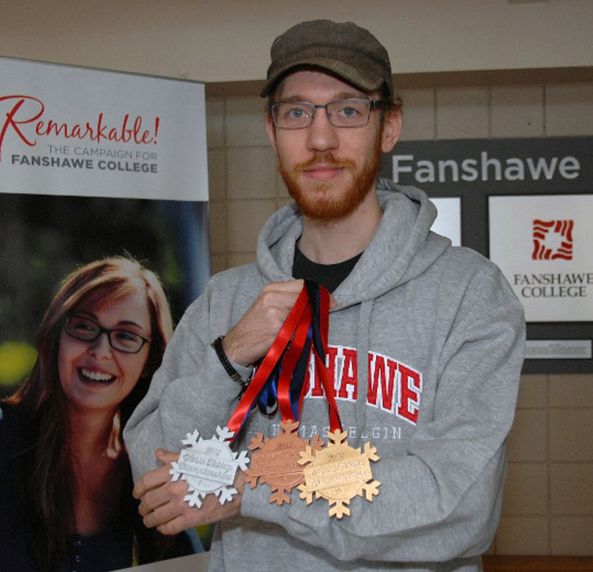

Origin Makerspace
Meet our team!
Josh Taylor
Hi!
I’m Josh Taylor. I graduated with a certificate in Mechanical techniques for CNC in 2016 from Fanshawe (St. Thomas Elgin Regional Campus) and started working in 3D design and fabrication on commission while studying there. I designed artistic and functional parts for the college, as well as other clients such as the STEGH (St Thomas Elgin General Hospital) Foundation.
While my course was in CNC I heavily focused in SolidWorks and 3D printing, acting as a tutor for Solidworks and as a student ambassador, demonstrating the 3D printer functionality and capabilities at open houses and to guests including Karen Vecchio.
My hobbies include videogames, cooking, gardening, building and painting models, and spending time with my dog. Much of my painting has also been work on commission for warhammer, infinity and pathfinder miniatures. The miniature community is heavily interested in high resolution printing and i'm excited to be seeing more people to expand their collections.
Portfolio